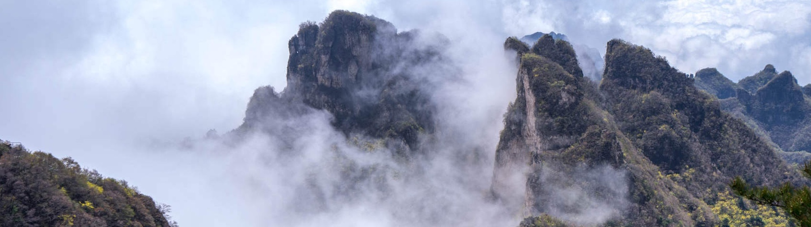

王莽岭
王莽岭风景区，位于山西省晋城市陵川县古郊乡境内，因西汉王莽赶刘秀到此地安营扎寨而得名。包括王莽岭、锡崖沟、昆山、刘秀城四个景系，由晋城市兰花集团2003年开始经营开发。总面积150多平方公里，最高海拔1700余米，最低处跌入河南省辉县市境内仅300米左右，是南太行的最高峰，风光秀 丽，景色诱人。这里的云海、日出、奇峰、松涛、挂壁公路、红岩大峡谷、立体瀑布，形成了八百里太行最著名的自然景观，素有 “清凉圣境”、“避暑天堂”“世外桃源”、“太行至尊”之美誉。毛泽东生前秘书、当代诗坛领袖李锐畅游景区后称赞道：“不登王莽岭，岂识太行山。天下奇峰 聚，何须五岳攀。”
王莽岭景区，是南太行的最高峰，最高海拔1700余米，最低处仅800米，风光秀 丽，景色诱人。这里的云海、日出、奇峰、松涛、挂壁公路、红岩大峡谷、立体瀑布，形成了八百里太行最著名的自然景观，素有 “清凉圣境”、“避暑天堂”“世外桃源”、“太行至尊”之美誉。毛泽东生前秘书、当代诗坛领袖李锐畅游景区后称赞道：“不登王莽岭，岂识太行山。天下奇峰 聚，何须五岳攀。”